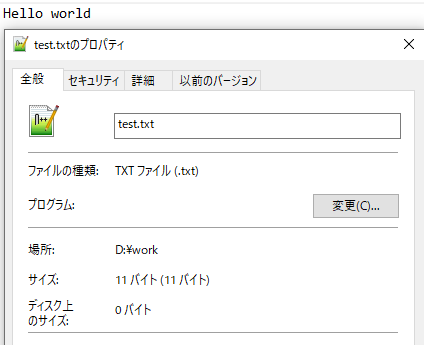
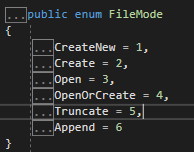
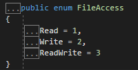
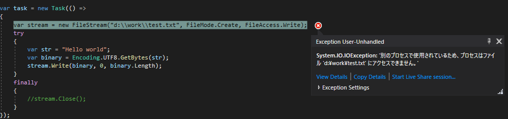
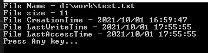
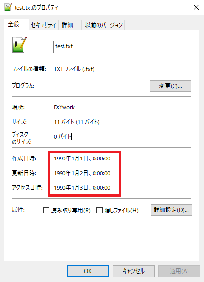

[C#] 42. ファイルを扱い(IO)とファイルメタデータ(FileInfo)を使い方
こんにちは。明月です。
この投稿はC#でファイルを扱い(IO)とファイルメタデータ(FileInfo)を使い方に関する説明です。
プログラムで使う代表的な装置リソースならファイル扱い(ファイルで書込、読取、IO)と通信ソケット(Socket)があります。
このファイル扱いは英語の略語でIOといいますが、IOはInput ouputで入出力という意味です。入出力装置ならマウス、キーボード、モニターなどがありますが、プログラムでIOといいならファイルを扱うリソースだと思えば良いです。
我々がプログラムを使う時にプログラムを終了すればメモリに格納したデータはすべてなくなります。そのために、プログラムでデータを保管する方法の一つでファイルで格納する方法があります。
ファイルはbyteタイプで構成されているし、プログラムではunsigned char(byte)で構成します。
using System;
using System.IO;
using System.Text;
namespace Example
{
class Program
{
// 実行関数
static void Main(string[] args)
{
// FileStream生成
// 生成するファイル名、オプション(ファイル生成)、ファイルアクセス権限(作成)
var stream = new FileStream("d:\\work\\test.txt", FileMode.Create, FileAccess.Write);
try
{
// ファイルに入力するstring
var str = "Hello world";
// Stringをbyte[]タイプに変換
var binary = Encoding.UTF8.GetBytes(str);
// ファイルにデータを書き込む。
stream.Write(binary, 0, binary.Length);
}
finally
{
// ストリームを閉める
stream.Close();
}
// 任意のキーを押してください
Console.WriteLine("Press Any key...");
Console.ReadLine();
}
}
}

私はdドライブでworkというフォルダでtest.txtというファイルを作成しました。
内容はHello worldで正確にスペースまで11バイトを生成します。結果をみればファイルサイズが11バイトで生成されたことを確認できます。
ファイルをtxtファイルで作成し、StringデータをEncodingを通ってbyteタイプに変換しました。
そのため、メモ帳で該当のファイルを開くとHello worldの内容が作成されたことを確認できます。
そして、最終的にリソースを使った後にはClose関数で閉めなければならないです。
今回はファイルのデータを読み込んでコンソールに表示しましょう。
using System;
using System.IO;
using System.Text;
namespace Example
{
class Program
{
// 実行関数
static void Main(string[] args)
{
// ファイルメタデータ取得
var file = new FileInfo("d:\\work\\test.txt");
// FileStream生成
// 生成するファイル名、オプション(ファイル開く)、ファイルアクセス権限(読み取り)
var stream = new FileStream("d:\\work\\test.txt", FileMode.Open, FileAccess.Read);
try
{
// ファイルメタデータでファイルサイズを取得してbyte配列を生成
var binary = new byte[file.Length];
// streamでファイルを読み取り
stream.Read(binary, 0, binary.Length);
// byteタイプをstringタイプに変換
var str = Encoding.UTF8.GetString(binary);
// コンソール出力
Console.WriteLine(str);
}
finally
{
// ストリームを閉める
stream.Close();
}
// 任意のキーを押してください
Console.WriteLine("Press Any key...");
Console.ReadLine();
}
}
}
上はファイルを読み取ってコンソール出力する例です。
ファイルメタデータでファイルの情報を読み取ってファイルサイズ程にbyte配列を生成します。
そしてstreamで読み取ってStringに変換しました。変換した内容をまたコンソールに表示するとHello worldが表示されます。
ここのEncodingとバイナリ(byte[])に関しては別の投稿で詳細に説明します。
先、FileStreamに関して始めのパラメータは対象ファイルのパス、ファイルモード、ファイルアクセス権限設定でストリームを生成します。
ファイルモードではCreate、Open、Write、CreateNew、Appendを使ったらCreateはファイルを生成する(既存ファイルがあれば上書き)、CreateNewもファイル生成しますが、既存ファイルがあればエラーを発生します。
Openは既存ファイルを読み取り、WriteとAppendは書き込みですが、Writeは既存の内容を作成して初めから作成すること、Appendは既存内容から続けて作成することの差異があります。

ファイルアクセス権限はReadは読み取り、Writeは書き込み、ReadWriteは読み取り、書き込みの機能が同時にあります。

そしてStreamは使った後で必ずCloseでリソースを閉めなければならないです。なぜならStreamがOpenになっている状況ならファイルリソースを捕まっているからです。
using System;
using System.IO;
using System.Text;
using System.Threading.Tasks;
namespace Example
{
class Program
{
// スレッドでファイルを読み込み関数
private static async Task ReadFile()
{
// Task生成
var task = new Task(() =>
{
// FileStream生成
// 生成するファイル名、オプション(ファイル生成)、ファイルアクセス権限(作成)
var stream = new FileStream("d:\\work\\test.txt", FileMode.Create, FileAccess.Write);
try
{
// ファイルに入力するstring
var str = "Hello world";
// Stringをbyte[]タイプに変換
var binary = Encoding.UTF8.GetBytes(str);
// ファイルにデータを書き込む。
stream.Write(binary, 0, binary.Length);
}
finally
{
// ストリームを閉める
//stream.Close();
}
});
// task開始
task.Start();
// 終了まで待機
await task;
}
// 実行関数
static void Main(string[] args)
{
// スレッド開始
ReadFile().Wait();
ReadFile().Wait();
// 任意のキーを押してください
Console.WriteLine("Press Any key...");
Console.ReadLine();
}
}
}

スレッドで並列処理を作成した後、各のスレッドでFileStreamを生成してファイルの書き込みを作成しました。そして最後にstream.Close()をコメント処理して実行しました。
そうすれば実行中でエラーが発生しました。エラー内容は他のプロセスで該当のリソースが使っているので、アクセスができませんというエラーが発生しました。
我々が仕事する時にエクセルやファイルを同時に開くと発生するエラーと似ている概念です。Streamでファイルリソースを捕まったら他のプログラムや他の実行領域で使われないというエラーが発生します。
そしてファイルのデータは実はバイナリデータしかありません。上の例でHello worldの11byteのデータを書き込んだらサイズは正確に11byteになることを確認できます。
でも、ファイル情報をみればファイル名から作成日時、変更日時、アクセス日時などのデータがありますが、ファイルにこの情報があることではなく、OSでファイルの情報を持っていますが、それをメタデータと言います。
このメタデータはFileInfoクラスを利用して情報を取得、変更することができます。
using System;
using System.IO;
namespace Example
{
class Program
{
// 実行関数
static void Main(string[] args)
{
// ファイルメタデータ取得
var fileinfo = new FileInfo("d:\\work\\test.txt");
// ファイル名
Console.WriteLine("File Name - " + fileinfo.FullName);
// ファイルサイズ
Console.WriteLine("File size - " + fileinfo.Length);
// ファイル作成日時
Console.WriteLine("File CreationTime - " + fileinfo.CreationTime);
// ファイル更新日時
Console.WriteLine("File LastWriteTime - " + fileinfo.LastWriteTime);
// アクセス日時
Console.WriteLine("File LastAccessTime - " + fileinfo.LastAccessTime);
// 任意のキーを押してください
Console.WriteLine("Press Any key...");
Console.ReadLine();
}
}
}

そしてこのメタデータは修正も可能です。
using System;
using System.IO;
namespace Example
{
class Program
{
// 実行関数
static void Main(string[] args)
{
// ファイルメタデータ取得
var fileinfo = new FileInfo("d:\\work\\test.txt");
// ファイル作成日時修正
fileinfo.CreationTime = new DateTime(1990, 01, 01);
// ファイル更新日時修正
fileinfo.LastWriteTime = new DateTime(1990, 01, 02);
// アクセス日時修正
fileinfo.LastAccessTime = new DateTime(1990, 01, 03);
// 任意のキーを押してください
Console.WriteLine("Press Any key...");
Console.ReadLine();
}
}
}

メタデータを修正してファイル情報を確認するとすべて1990年度に作成してアクセスしたことになっていることを確認できます。
ここまでC#でファイルを扱い(IO)とファイルメタデータ(FileInfo)を使い方に関する説明でした。
ご不明なところや間違いところがあればコメントしてください。
- [C#] 49. Operator(演算子)のオーバーロードを使い方2021/10/12 18:28:42
- [C#] 48. IEnumerableとIEnumerator、そしてyieldキーワード2021/10/11 19:49:33
- [C#] 47. Nugetを使い方(外部ライブラリ)とデータベース(MariaDB(Mysql))を使い方、そしてトランザクション(Transaction)2021/10/08 18:58:57
- [C#] 46. データベース(MSSQL)に接続する方法2021/10/07 18:39:58
- [C#] 45. ネットワークソケット通信(Socket)を使い方2021/10/06 19:06:25
- [C#] 44. ファイル(FileInfo)とディレクトリ(DirectoryInfo)を扱い2021/10/05 19:29:34
- [C#] 43. ストリーム(Stream)とバイナリ(byte[])、エンコード(Encoding)、そしてusingを使い方とIDisposableインターフェース2021/10/04 18:33:04
- [C#] 42. ファイルを扱い(IO)とファイルメタデータ(FileInfo)を使い方2021/10/01 20:10:21
- [C#] 41. Taskクラスとasync、awaitを使い方2021/10/01 18:59:14
- [C#] 40. Linqを利用した並列処理(Parallel)を使い方2020/05/13 17:37:13
- [C#] 39. lockキーワードとdeadlock(デッドロック)2019/07/24 00:57:35
- [C#] 38. ThreadPoolの使い方2019/07/23 00:05:40
- [C#] 37. スレッド(Thread)を使い方、Thread.Sleep関数を使い方2019/07/22 23:45:05
- [C#] 36. 拡張メソッドを使い方2019/07/22 23:30:17
- [C#] 35. 文字列クラス、StringとStringBuilderを使い方2019/07/22 23:15:42
- [Design pattern] 2-4. デコレーターパターン(Decorator pattern)2021/10/28 20:11:13
- [C#] 58. ウィンドウフォーム(Window form)を作成する方法、そしてウィンドウメッセージとキュー2021/10/27 20:35:44
- [Design pattern] 2-3. ブリッジパターン(Bridge pattern)2021/10/27 20:32:21
- [Design pattern] 2-2. コンポジットパターン(Composite pattern)2021/10/27 20:30:54
- [Design pattern] 2-1. アダプターパターン(Adapter pattern)2021/10/26 19:12:40
- [Project design] プログラム最終テスト - ST(System test(Standard, Scenario))2021/10/26 19:10:07
- [Project design] プログラム結合テスト - IT(Integration test)2021/10/25 20:12:17
- [Python] Seleniumライブラリを使う方法(自動ウェブテスト、ウェブスクレイピング)2021/10/25 19:29:00
- [Design pattern] 1-5. プロトタイプパターン(Prototype pattern)2021/10/22 19:35:45
- [Project design] プログラム検証とテスト - Unitテスト2021/10/22 19:34:09
- [C#] 57. コーティング規約2021/10/21 18:57:02
- [C#] 56. 値の初期化及び基本データ値(default)を設定する方法、そして原始データのnull処理、?と??の使い方2021/10/21 18:54:41
- [C#] 55.namespaceとusing、そしてpartialの使い方2021/10/21 18:51:39
- [C#] 54. Reflection機能を使い方 - Attribute2021/10/20 19:29:31
- [Project design] プログラム制作(コーディング) - クラス作成方法2021/10/20 19:28:09